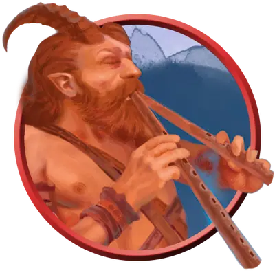

Сатир заводила
Satyr Revelmaster
Средняя Фея, Хаотичная Нейтральная

Класс Защиты 17 Инициатива +7 (17)
Хиты 82 (15к8 + 15)
Скорость 40 футов
| мод | спас | ||
|---|---|---|---|
| СИЛ | 12 | +1 | +1 |
| ЛОВ | 18 | +4 | +7 |
| ТЕЛ | 12 | +1 | +1 |
| мод | спас | ||
|---|---|---|---|
| ИНТ | 12 | +1 | +1 |
| МДР | 14 | +2 | +5 |
| ХАР | 17 | +3 | +3 |
Чувства пассивное Восприятие 15
Языки Общий, Сильван, Эльфийский
Опасность 6 (2 300 опыта; БВ +3)
Особенности
Сопротивление магии. Сатир совершает с Преимуществом спасброски от заклинаний и прочих магических эффектов.
Действия
Мультиатака. Сатир совершает три атаки Гарцующей пляской.
Гарцующая пляска. Бросок рукопашной атаки: +7, досягаемость 5 фт. Попадание: 13 (2к8 + 4) Дробящего урона, и цель становится Очарованной до начала следующего хода сатира.
Мелодия фей (Перезарядка 4–6). Сатир исполняет чарующую или пугающую песню. Спасбросок Мудрости: Сл 14, каждое враждебное существо в 60-футовой Эманации, исходящей от сатира. Провал: Цель подвергается эффекту соответствующей песни:
Чарующая. Цель становится Очарованной на 1 минуту. Пока цель Очарована, она также Недееспособна и использует всё своё перемещение, чтобы танцевать на одном месте. Эффект на цели оканчивается, если она получает урон.
Пугающая. 10 (2к6 + 3) Психического урона, и цель получает состояние Испуганный на 1 минуту. Если цель завершает свой ход вне линии видимости сатира, состояние на ней оканчивается.
Бонус мастерства +3
Среда обитания Леса, Страна фей
Сокровища Инструментальные
Сатиры
Гуляки с рогами и копытами
Сатиры воплощают собой необузданные радости дикой природы. Они безудержно предаются кутежам и гульбе: пьют, едят, пляшут, дерутся и дурачатся напропалую.
Сатиры заводилы пускают в ход магическую музыку, дабы менять настрой других существ. К этим чарам они прибегают и ради того, чтобы их торжества не угасали, и дабы отваживать недругов.